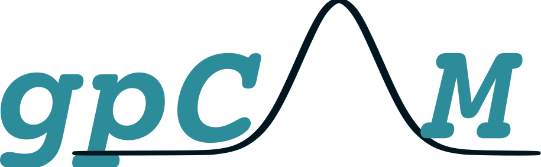
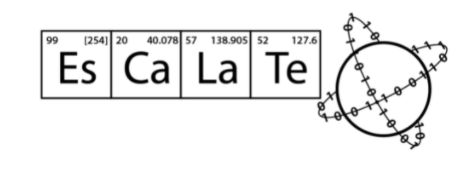
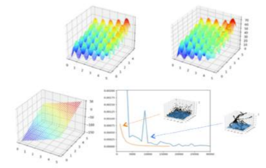
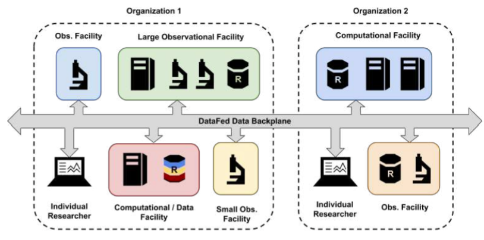
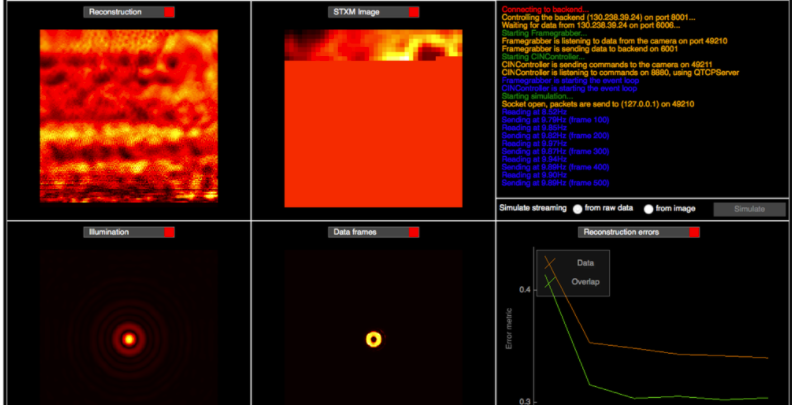
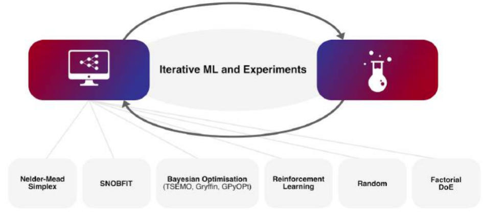
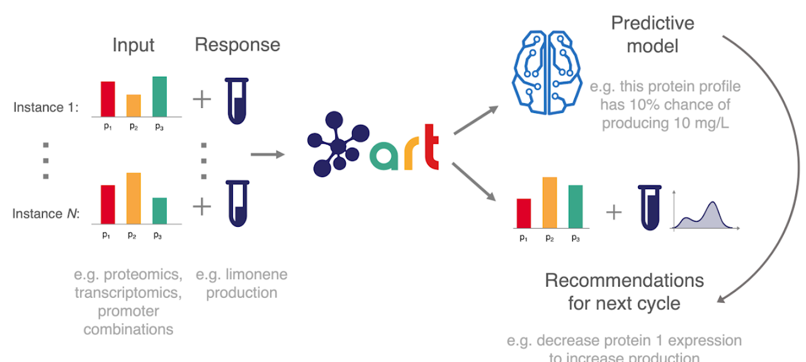

gpCAM
Flexible, HPC-ready, user-friendly Gaussian-process-based autonomous discovery.
Code, Software, Resources
A collection of open-source tools and workshop materials for autonomous scientific experimentation, maintained and curated by the CASE community.
Software tools

Flexible, HPC-ready, user-friendly Gaussian-process-based autonomous discovery.

Experiment Specification, Capture and Laboratory Automation Technology.

A framework of optimization algorithms for robust, flexible solution of hard optimization problems.

A scientific data management system for seamless cross-facility and cross-institutional data collaboration.

API-level support for requesting communication paths between disparate experimental services.

A Python package for machine-learning-driven optimization of chemical reactions.

The Automated Recommendation Tool uses machine learning and probabilistic modeling to guide synthetic biology.
Workshop material
Workshop report